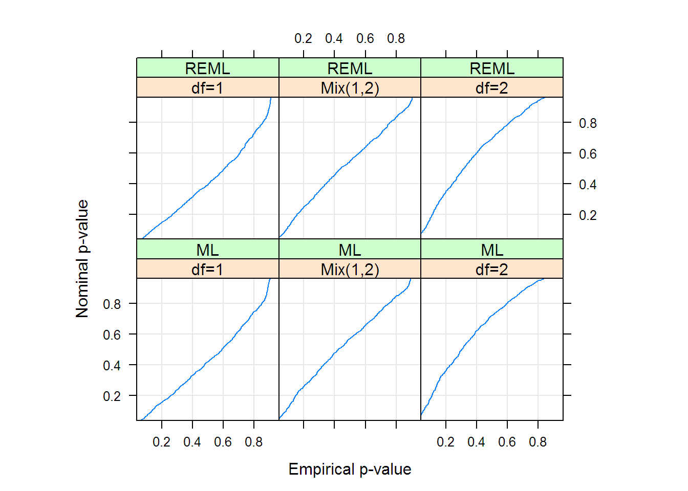
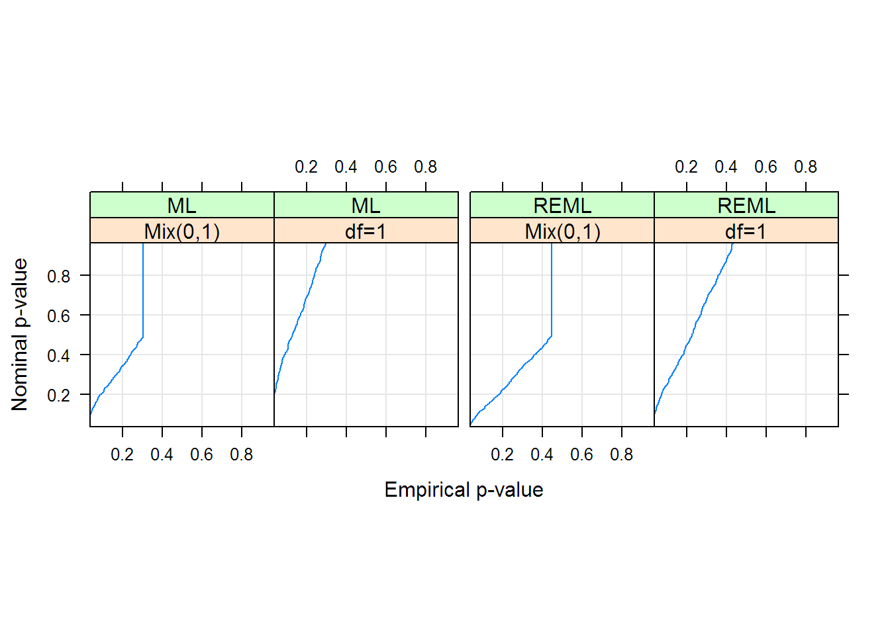
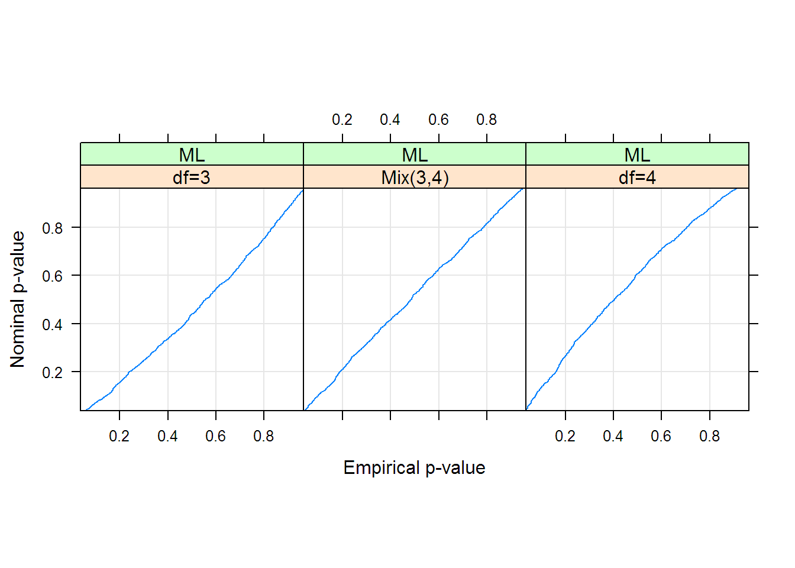

2 Chapter 2
#-*- R -*-
library( nlme )
options( width = 65, digits = 5 )
options( contrasts = c(unordered = "contr.helmert",
ordered = "contr.poly") )
#pdf( file = 'ch02.pdf' )
# Chapter 2 Theory and Computational Methods for Linear Mixed-Effects Models
# 2.2 Likelihood Estimation for LME Models
Xmat <- matrix( c(1, 1, 1, 1, 8, 10, 12, 14), ncol = 2 )
Xmat## [,1] [,2]
## [1,] 1 8
## [2,] 1 10
## [3,] 1 12
## [4,] 1 14## [,1] [,2]
## [1,] -2 -22.0000
## [2,] 0 -4.4721## [,1] [,2]
## [1,] -0.5 0.67082
## [2,] -0.5 0.22361
## [3,] -0.5 -0.22361
## [4,] -0.5 -0.67082## [,1] [,2] [,3] [,4]
## [1,] -0.5 0.67082 0.023607 0.54721
## [2,] -0.5 0.22361 -0.439345 -0.71202
## [3,] -0.5 -0.22361 0.807869 -0.21760
## [4,] -0.5 -0.67082 -0.392131 0.38240fm1Rail.lme <- lme( travel ~ 1, data = Rail, random = ~ 1 | Rail,
control = list( msVerbose = TRUE ) )## 0: 61.048859: -1.81959
## 1: 61.048859: -1.81959fm1Rail.lme <- lme( travel ~ 1, data = Rail, random = ~ 1 | Rail,
control = list( msVerbose = TRUE, niterEM = 0 ))## 0: 67.893737: -0.431523
## 1: 61.612483: -1.43152
## 2: 61.138913: -1.98441
## 3: 61.050114: -1.83866
## 4: 61.048866: -1.81819
## 5: 61.048859: -1.81960
## 6: 61.048859: -1.81959fm1Machine <-
lme( score ~ Machine, data = Machines, random = ~ 1 | Worker )
fm2Machine <- update( fm1Machine, random = ~ 1 | Worker/Machine )
anova( fm1Machine, fm2Machine )## Model df AIC BIC logLik Test L.Ratio p-value
## fm1Machine 1 5 300.46 310.12 -145.23
## fm2Machine 2 6 231.27 242.86 -109.64 1 vs 2 71.191 <.0001OrthoFem <- Orthodont[ Orthodont$Sex == "Female", ]
fm1OrthF <- lme( distance ~ age, data = OrthoFem,
random = ~ 1 | Subject )
fm2OrthF <- update( fm1OrthF, random = ~ age | Subject )
orthLRTsim <- simulate.lme( fm1OrthF, m2 = fm2OrthF, nsim = 1000 )
plot( orthLRTsim, df = c(1, 2) ) # produces Figure 2.3
machineLRTsim <- simulate.lme(fm1Machine, m2 = fm2Machine, nsim= 1000)
plot( machineLRTsim, df = c(0, 1), # produces Figure 2.4
layout = c(4,1), between = list(x = c(0, 0.5, 0)) )
stoolLRTsim <-
simulate.lme( list(fixed = effort ~ 1, data = ergoStool,
random = ~ 1 | Subject),
m2 = list(fixed = effort ~ Type),
method = "ML", nsim = 1000 )
plot( stoolLRTsim, df = c(3, 4) ) # Figure 2.5
## Error in find.package(package, lib.loc, verbose = verbose): there is no package called 'SASmixed'pbibLRTsim <-
simulate.lme(list( fixed = response ~ 1, data = PBIB,
random = ~ 1 | Block ),
m2 = list(fixed = response ~ Treatment, data = PBIB,
random = ~ 1 | Block),
method = "ML", nsim = 1000 )## Error in simulate.lme(list(fixed = response ~ 1, data = PBIB, random = ~1 | : 객체 'PBIB'를 찾을 수 없습니다## Error in plot(pbibLRTsim, df = c(14, 16, 18), weights = FALSE): 객체 'pbibLRTsim'를 찾을 수 없습니다## Linear mixed-effects model fit by REML
## Data: Machines
## AIC BIC logLik
## 231.27 242.86 -109.64
##
## Random effects:
## Formula: ~1 | Worker
## (Intercept)
## StdDev: 4.781
##
## Formula: ~1 | Machine %in% Worker
## (Intercept) Residual
## StdDev: 3.7295 0.96158
##
## Fixed effects: score ~ Machine
## Value Std.Error DF t-value p-value
## (Intercept) 59.650 2.14467 36 27.8131 0.0000
## Machine1 3.983 1.08849 10 3.6595 0.0044
## Machine2 3.311 0.62844 10 5.2688 0.0004
## Correlation:
## (Intr) Machn1
## Machine1 0
## Machine2 0 0
##
## Standardized Within-Group Residuals:
## Min Q1 Med Q3 Max
## -2.269587 -0.548466 -0.010706 0.439366 2.540058
##
## Number of Observations: 54
## Number of Groups:
## Worker Machine %in% Worker
## 6 18## Error in is.data.frame(data): 객체 'PBIB'를 찾을 수 없습니다## Error in anova(fm1PBIB): 객체 'fm1PBIB'를 찾을 수 없습니다## Error in update(fm1PBIB, method = "ML"): 객체 'fm1PBIB'를 찾을 수 없습니다## Error in update(fm2PBIB, response ~ 1): 객체 'fm2PBIB'를 찾을 수 없습니다## Error in anova(fm2PBIB, fm3PBIB): 객체 'fm2PBIB'를 찾을 수 없습니다## numDF denDF F-value p-value
## (Intercept) 1 36 773.57 <.0001
## Machine 2 10 20.58 3e-04## user system elapsed
## 23.74 0.65 27.11